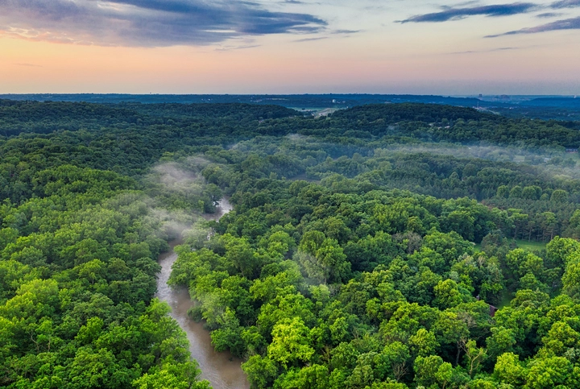
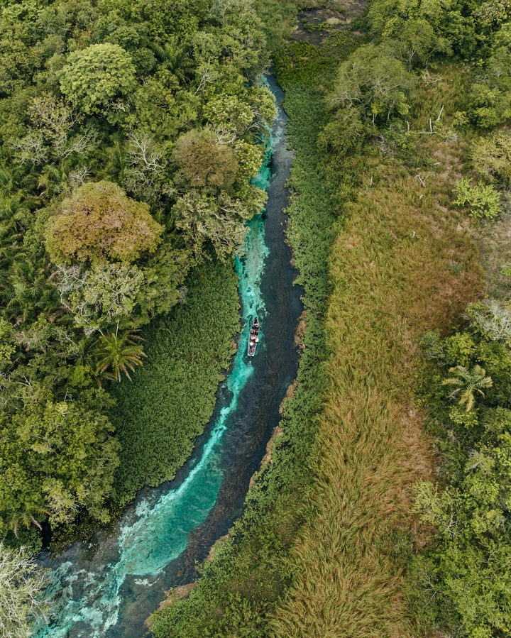
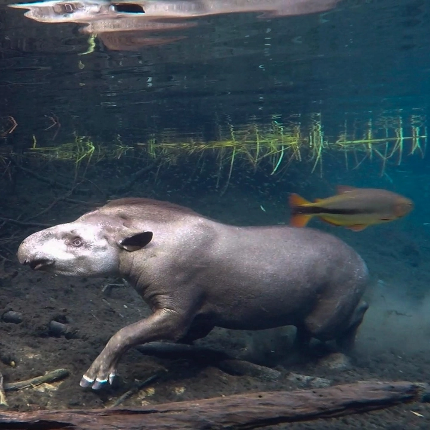
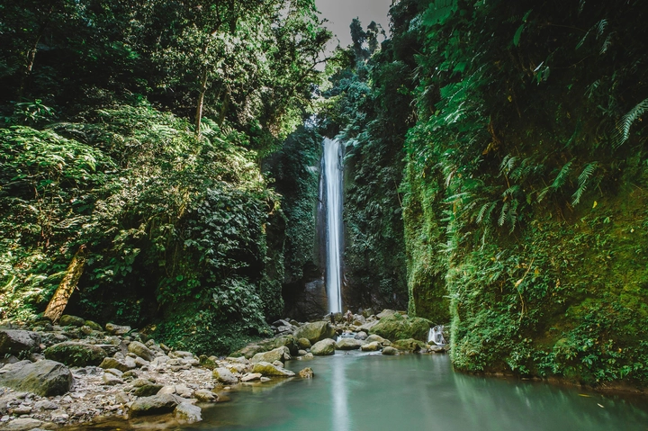
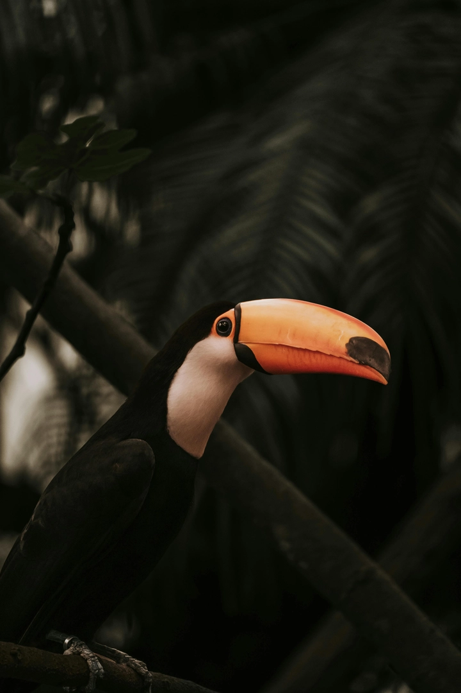

Sông Amazon: hệ sinh thái, văn hóa và du lịch kỳ thú
Sông Amazon, với danh tiếng là con sông lớn và hùng vĩ nhất thế giới, không chỉ nổi bật bởi chiều dài và lưu lượng khổng lồ mà còn là trái tim của một trong những hệ sinh thái đa dạng và phong phú nhất hành tinh. Chạy qua nhiều quốc gia Nam Mỹ, Amazon mang theo dòng nước, dinh dưỡng và sự sống đến khắp các khu rừng nhiệt đới, tạo nên một thế giới riêng biệt, kỳ bí và đầy màu sắc.
Hệ sinh thái Amazon chứa hàng triệu loài thực vật và động vật, nhiều trong số đó không thể tìm thấy ở bất cứ nơi nào khác trên Trái Đất. Khám phá con sông này không chỉ là hành trình địa lý mà còn là chuyến phiêu lưu văn hóa, lịch sử và khoa học.
Hôm nay, hãy cùng TrithucWorld tìm hiểu chi tiết về Sông Amazon, từ địa lý, đa dạng sinh học đến cuộc sống của người bản địa và vai trò của nó đối với toàn cầu.
1. Giới thiệu về Sông Amazon
Sông Amazon nằm ở Nam Mỹ, chủ yếu chảy qua Brazil, nhưng cũng ảnh hưởng đến các quốc gia như Peru, Colombia, Bolivia, Ecuador, Venezuela và Guyana. Với chiều dài khoảng 6.400 km, Amazon chỉ đứng sau sông Nile về độ dài nhưng lại là con sông có lưu lượng nước lớn nhất thế giới, chiếm khoảng 20% tổng lượng nước ngọt chảy ra đại dương của Trái Đất. Lưu vực Amazon rộng hơn 7 triệu km², chiếm gần 40% diện tích Nam Mỹ và tạo ra một hệ thống sông ngòi phức tạp, với hàng trăm sông nhánh và kênh rạch.

Sông Amazon không chỉ quan trọng về mặt địa lý mà còn có vai trò đặc biệt trong cân bằng sinh thái toàn cầu. Các dòng nước chảy từ rừng Amazon giúp điều hòa khí hậu, cung cấp oxy, hấp thụ carbon dioxide và duy trì độ ẩm cho toàn bộ khu vực nhiệt đới. Hệ thống sông ngòi của Amazon cũng là nguồn sống quan trọng cho hàng triệu người dân địa phương, cung cấp nước, thực phẩm và phương tiện di chuyển trong vùng rừng nhiệt đới rộng lớn và khó tiếp cận.
Khám phá Amazon không chỉ là quan sát một con sông khổng lồ mà còn là tìm hiểu về một mạng lưới sinh thái phức tạp, nơi tất cả các yếu tố – từ nước, đất, thực vật đến động vật và con người – đều liên kết mật thiết với nhau. Sự hùng vĩ, bí ẩn và quy mô phi thường của Amazon khiến nó trở thành một trong những điểm đến nghiên cứu, du lịch và khám phá hấp dẫn nhất thế giới.
2. Địa lý và khí hậu của lưu vực Amazon
Lưu vực Amazon là một trong những hệ thống sông ngòi rộng lớn và đa dạng nhất thế giới. Nó trải dài qua nhiều quốc gia, với địa hình thay đổi từ các dãy núi Andes ở phía tây đến đồng bằng rộng lớn ở Brazil. Các sông nhánh như Rio Negro, Madeira, Tapajós hay Xingu tạo nên một mạng lưới nước chảy dày đặc, điều chỉnh dòng chảy và dinh dưỡng cho rừng Amazon. Địa hình thay đổi cùng với các vùng đất thấp, đầm lầy và các đảo nổi tạo ra những môi trường sống đa dạng, phù hợp cho hàng triệu loài sinh vật.
Khí hậu Amazon chủ yếu là nhiệt đới ẩm, với lượng mưa hàng năm dao động từ 1.500 đến 3.000 mm. Mùa mưa kéo dài từ tháng 12 đến tháng 5, khiến mực nước sông dâng cao và ngập lụt các khu rừng ngập nước. Ngược lại, mùa khô từ tháng 6 đến tháng 11 mang đến môi trường thuận lợi để khám phá trên bộ. Sự thay đổi về khí hậu và độ cao cũng tạo ra các tiểu khí hậu riêng biệt, từ rừng nhiệt đới ẩm ướt, rừng ngập nước cho đến rừng khô và đầm lầy.
Khí hậu và địa hình phức tạp này không chỉ ảnh hưởng đến sinh hoạt của người dân bản địa, mà còn tác động trực tiếp đến đa dạng sinh học. Nhiều loài thực vật, động vật chỉ tồn tại trong các điều kiện khí hậu đặc thù, và việc hiểu rõ địa lý, dòng chảy và mùa mưa là yếu tố quan trọng trong việc nghiên cứu và bảo tồn Amazon.
3. Đa dạng sinh học tại Amazon
Amazon là hệ sinh thái giàu đa dạng sinh học nhất hành tinh, được mệnh danh là “lá phổi xanh của Trái Đất”. Khu vực này chứa hơn 390 tỷ cây thuộc 16.000 loài khác nhau, cùng hàng triệu loài động vật, từ các loài chim rực rỡ, cá khổng lồ như cá hồng hạc Amazon, cá piranha, đến những loài thú săn mồi như báo đốm, lười và hổ nước hiếm gặp. Nhiều loài trong số này là đặc hữu, chỉ có thể tìm thấy ở Amazon, và đóng vai trò quan trọng trong việc duy trì cân bằng sinh thái.
Ngoài hệ động thực vật, Amazon còn có các hệ sinh thái đặc thù, như rừng ngập nước, đồng cỏ ngập nước và các đầm lầy nước ngọt. Các môi trường này tạo điều kiện cho sinh vật phát triển đa dạng, từ vi sinh vật, côn trùng đến các loài lớn. Đặc biệt, rừng Amazon là nơi chứa nguồn gen phong phú, có tiềm năng ứng dụng trong y học, nông nghiệp và công nghệ sinh học.

Tuy nhiên, đa dạng sinh học của Amazon đang đứng trước mối đe dọa nghiêm trọng từ khai thác rừng, biến đổi khí hậu và nạn săn bắn trái phép. Việc nghiên cứu và bảo tồn hệ sinh thái này không chỉ giúp duy trì sự sống tại Amazon mà còn ảnh hưởng trực tiếp đến sự cân bằng sinh thái toàn cầu.
4. Người bản địa và văn hóa Amazon
Amazon không chỉ là thiên nhiên hùng vĩ mà còn là ngôi nhà của hàng triệu người bản địa. Các bộ lạc như Yanomami, Kayapo, Ticuna hay Asháninka đã sống ở Amazon hàng nghìn năm, duy trì những phong tục, nghi lễ và kiến thức truyền thống về rừng, động vật và nguồn nước. Người bản địa sử dụng rừng để lấy thực phẩm, thuốc men, vật liệu xây dựng và duy trì đời sống tinh thần qua các nghi lễ tôn giáo và lễ hội truyền thống.
Văn hóa bản địa Amazon đặc trưng bởi sự hòa hợp với thiên nhiên. Họ hiểu rõ chu kỳ sinh thái, biết khai thác nguồn lợi mà không phá hủy môi trường, và truyền lại kiến thức này qua các thế hệ. Ngôn ngữ, âm nhạc, nghệ thuật và các kỹ thuật săn bắt, đánh cá đều phản ánh mối quan hệ bền chặt giữa con người và rừng.
Sự hiện diện của người bản địa cũng đặt ra thách thức trong việc bảo tồn rừng. Áp lực từ khai thác gỗ, nông nghiệp, mỏ khoáng sản và phát triển hạ tầng đã ảnh hưởng đến đất sinh sống của các bộ lạc. Việc bảo vệ quyền lợi người bản địa và duy trì văn hóa truyền thống là một phần không thể thiếu trong các nỗ lực bảo tồn Amazon.
5. Lịch sử khám phá và nghiên cứu khoa học
Sông Amazon đã thu hút các nhà thám hiểm và nhà khoa học từ hàng thế kỷ nay. Những chuyến thám hiểm đầu tiên bởi Francisco de Orellana vào thế kỷ 16 ghi dấu ấn trong lịch sử khi ông vượt qua hàng ngàn km rừng rậm và sông ngòi chưa được biết đến. Sau đó, các nhà tự nhiên học như Alexander von Humboldt và Henry Walter Bates tiếp tục nghiên cứu, ghi chép chi tiết về động thực vật và con người bản địa.
Trong thế kỷ 20 và 21, các chuyến nghiên cứu khoa học đã mở rộng tầm hiểu biết về Amazon. Các nhà khoa học khám phá đa dạng sinh học, chu trình carbon, hệ sinh thái rừng ngập nước, đồng thời ứng dụng công nghệ hiện đại như ảnh vệ tinh, GIS và AI để theo dõi rừng, phân tích tác động biến đổi khí hậu và bảo vệ động vật quý hiếm.

Lịch sử khám phá Amazon không chỉ là câu chuyện về phiêu lưu mạo hiểm, mà còn là hành trình khoa học và bảo tồn, giúp thế giới hiểu rõ giá trị sinh thái, văn hóa và kinh tế của con sông khổng lồ này.
6. Các con sông và nhánh sông quan trọng
Sông Amazon không chỉ là một dòng sông duy nhất mà là một mạng lưới khổng lồ với hàng trăm sông nhánh, mỗi con sông mang theo hệ sinh thái riêng và đóng vai trò quan trọng trong việc duy trì cân bằng tự nhiên. Trong số các sông nhánh, Rio Negro nổi bật với màu nước đen đặc trưng do chứa nhiều axit humic từ lá rừng mục, tạo môi trường sống lý tưởng cho nhiều loài cá và động vật thủy sinh đặc hữu. Rio Madeira là sông nhánh dài nhất và giàu phù sa, đóng vai trò quan trọng trong nông nghiệp và thủy lợi tại các vùng hạ lưu.
Các sông nhánh khác như Tapajós, Xingu, Purus và Juruá cũng mang những đặc điểm địa lý và sinh thái riêng biệt. Một số khu vực rừng ngập nước quanh sông nhánh đóng vai trò như vùng đệm sinh học, bảo vệ rừng Amazon khỏi tác động của xói mòn, lũ lụt và hoạt động khai thác. Các sông nhánh cũng là tuyến giao thông quan trọng cho người dân bản địa và du khách khám phá rừng, đồng thời là nguồn thủy sản phong phú, giúp đảm bảo sinh kế bền vững.
Hiểu về các con sông nhánh này giúp các nhà khoa học đánh giá dòng chảy, sự phân bố sinh vật và tác động của biến đổi khí hậu, đồng thời cung cấp thông tin quan trọng để quản lý bền vững tài nguyên nước và rừng Amazon.
7. Tác động của con người và khai thác tài nguyên
Amazon đang phải đối mặt với áp lực lớn từ hoạt động khai thác tài nguyên và phát triển con người. Khai thác gỗ, mở rộng nông nghiệp, chăn nuôi gia súc và khai thác khoáng sản khiến diện tích rừng bị giảm nhanh chóng. Những thay đổi này không chỉ làm mất môi trường sống của động vật mà còn ảnh hưởng trực tiếp đến khí hậu và chu trình nước của khu vực.
Hoạt động khai thác thủy điện cũng tạo ra những hồ chứa lớn, làm thay đổi dòng chảy tự nhiên và ảnh hưởng đến đời sống các bộ lạc bản địa. Thêm vào đó, sự gia tăng dân cư và du lịch chưa bền vững tại Amazon cũng tạo áp lực lên hệ sinh thái nhạy cảm này.

Các nhà nghiên cứu cảnh báo rằng nếu không kiểm soát, tỷ lệ mất rừng có thể gây hậu quả nghiêm trọng, bao gồm giảm lượng oxy, tăng phát thải carbon, suy giảm đa dạng sinh học và nguy cơ biến đổi khí hậu lan rộng. Do đó, bảo vệ Amazon không chỉ là nhiệm vụ của các quốc gia trong lưu vực mà còn là trách nhiệm toàn cầu.
8. Nguy cơ biến đổi khí hậu và bảo tồn
Biến đổi khí hậu là một trong những mối đe dọa nghiêm trọng nhất đối với Amazon. Tăng nhiệt độ, thay đổi lượng mưa và cháy rừng kéo dài có thể khiến một phần lớn rừng nhiệt đới bị biến đổi thành đồng cỏ khô hạn, làm mất môi trường sống của hàng triệu loài động thực vật. Mức độ suy giảm rừng cũng ảnh hưởng trực tiếp đến chu trình carbon toàn cầu, góp phần làm tăng khí nhà kính và ảnh hưởng đến khí hậu toàn cầu.
Bên cạnh đó, chính phủ các nước và các tổ chức quốc tế đã triển khai nhiều chương trình bảo tồn như khu bảo tồn thiên nhiên, dự án phục hồi rừng và chiến dịch chống khai thác gỗ bất hợp pháp. Các sáng kiến này nhằm cân bằng giữa phát triển kinh tế và bảo vệ môi trường, đồng thời khuyến khích du lịch sinh thái bền vững, giúp người dân địa phương có nguồn thu mà không phá hủy rừng.
Đồng thời, các tổ chức khoa học áp dụng công nghệ hiện đại như ảnh vệ tinh, GIS và AI để theo dõi cháy rừng, xói mòn và đa dạng sinh học, góp phần quản lý và bảo tồn Amazon hiệu quả hơn.
9. Đời sống động vật kỳ thú
Hệ động vật Amazon là một trong những kho tàng đa dạng sinh học độc đáo nhất thế giới. Con sông này là nơi sinh sống của hơn 3.000 loài cá, bao gồm cá hồng hạc khổng lồ, cá piranha săn mồi, cá heo sông Amazon (boto) với màu hồng đặc trưng. Rừng ngập nước và vùng đồng bằng sông tạo môi trường sống lý tưởng cho thú lớn như báo đốm, lười, tapir và cá sấu sông nước ngọt.
Amazon còn nổi tiếng với hệ chim phong phú, từ vẹt nhiều màu sắc, hồng hạc đến các loài chim săn mồi như đại bàng và cú. Ngoài ra, khu vực này chứa hàng triệu loài côn trùng và động vật không xương sống, nhiều loài vẫn chưa được khoa học công nhận.

Đặc biệt, môi trường rừng ngập nước tạo ra các hệ sinh thái độc đáo, nơi sinh sống của các loài thủy sinh, chim di cư và động vật bán thủy sinh. Để bảo tồn các loài động vật này, các dự án nghiên cứu và bảo tồn đang nỗ lực giám sát quần thể, hạn chế săn bắn và bảo vệ môi trường sống.
10. Du lịch và trải nghiệm khám phá Amazon
Nếu bạn là một người theo dõi kênh youtube Kẻ Du Mục bạn sẽ biết youtuber này đã có chuyến hành trình khám phá sông Amazon kéo dài 3 ngày 2 đêm rong ruỗi trên tàu cano vào năm 2025. Tuy nhiên anh chàng này chỉ đi qua một tuyến sông dễ di chuyển, còn những khu vực hiểm trở hơn thì vì điều kiện không cho phép nên đã không thể thực hiện được.
Tuy nhiên, qua những thước phim của anh chàng này, Amazon không chỉ hấp dẫn các nhà khoa học mà còn là điểm đến du lịch sinh thái độc đáo. Du khách có thể trải nghiệm hành trình trên sông bằng thuyền hoặc kayak, khám phá rừng ngập nước, ngắm chim và động vật hoang dã trong môi trường tự nhiên. Các tour du lịch còn kết hợp với giao lưu văn hóa với người bản địa, tham gia các nghi lễ, học cách săn bắt, hái lượm và nấu ăn theo truyền thống.
Ngoài ra, một số khu bảo tồn và công viên quốc gia tại Amazon phát triển du lịch bền vững, cung cấp dịch vụ hướng dẫn, homestay thân thiện với môi trường và các hoạt động giáo dục về sinh thái. Điều này giúp du khách hiểu giá trị của Amazon, đồng thời góp phần bảo tồn rừng và cải thiện đời sống cộng đồng bản địa.
Khám phá Amazon là sự kết hợp giữa phiêu lưu, học hỏi và tôn trọng thiên nhiên, mang đến trải nghiệm khó quên và nhận thức sâu sắc về tầm quan trọng của việc bảo vệ một trong những kho báu sinh thái lớn nhất hành tinh.